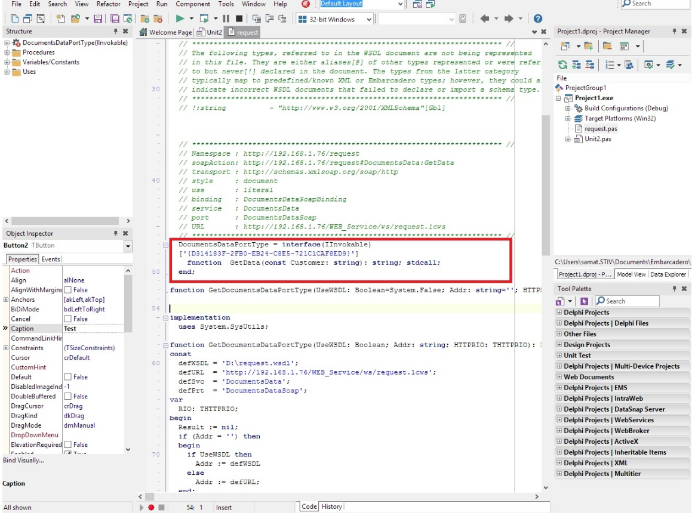

I. Раздел 1 – Пример реализации web-сервиса в системе «1С:Предприятие».
II. Раздел 2 – Пример обращения к web-сервису системы «1С:Предприятие» из стороннего приложения (разработка приложения в Delphi)
III. Раздел 3 – Пример обращения к web-сервису в системе «1С:Предприятие»
IV. Раздел 4 – Отладка web-сервисов в системе «1С:Предприятие»
РАЗДЕЛ I
ПРИМЕР РЕАЛИЗАЦИИ WEB-СЕРВИСА В СИСТЕМЕ «1С:ПРЕДПРИЯТИЕ»
ЗАДАЧА: Необходимо создать web-сервис, обращаясь к которому клиенты могут определить всю необходимую информацию по своим заявкам.
Задача является демонстрационной и служит только примером для понимания и обучения механизму web-сервисов.
РЕШЕНИЕ:
Шаг 1. Создадим новую информационную базу без конфигурации для разработки новой конфигурации.
Шаг 2. Добавим в конфигурацию несколько новых объектов
- справочник «Клиенты»;
- документ «Заявка»;
- перечисление «СтатусыЗаявок».
Шаг 3. Создадим новый XDTO-пакет.
Почему и для чего мы создаем XDTO-пакет? Подробнее об использовании механизма XDTO можно прочитать в «Глава 16. Руководство разработчика» издесь.
Коротко отметим лишь только то, что механизм XDTO является универсальным способом представления данных для взаимодействия с различными внешними источниками данных и программными системами.
В нашем случае пакет XDTO создается для описания возвращаемого значения web-сервиса.
Раскроем ветку «Общие» → «XDTO-пакеты» → Добавить…
Укажем имя XDTO-пакета «DocumentsData» и его пространство имен http://localhost/request или http://192.168.1.76/request (для облегчения понимания и процесса обучения, мы указываем локальный IP-адрес компьютера, где установлен web-сервер (поддерживаемые web-сервера: IIS или Apache)). Каждый Web-сервис может быть однозначно идентифицирован по своему имени и URI пространству имен, которому он принадлежит.
Наш пакет содержит два типа объектов XDTO:
1) Сustomer – для передачи данных элемента справочника «Клиенты».
Этот тип объекта XDTO будет содержать следующие свойства:
- Name – тип string из пространства имен http://www.w3.org/2001/XMLSchema;
2) Document – для передачи данных документа «Заявки»
Этот тип объекта XDTO будет содержать следующие свойства:
- Сustomer – тип Сustomer из пространства имен http://192.168.1.76/request; представляет собой ссылку на объект XDTO, который мы определили выше;
- Status - тип string из пространства имен http://www.w3.org/2001/XMLSchema;
- Numder - тип string из пространства имен http://www.w3.org/2001/XMLSchema.
Шаг 4. Добавим в конфигурацию новый Web-сервис
Раскроем ветку «Общие» → «Web-сервисы» → Добавить…
Для Web-сервиса укажем следующими значения свойств:
- Имя - DocumentsData
- URI Пространства имен – http://192.168.1.76/request
- Пакеты XDTO – DocumentsData или http://192.168.1.76/request
- Имя файла публикации – request.1cws
Шаг 5. У созданного Web-сервиса определим операцию «GetData»
Значения свойств операции:
- Тип возвращаемого значения – Document (http://192.168.1.76/request)
- Возможно пустое значение – Истина
- Имя процедуры – GetData.
Шаг 6. У операции GetData определим параметр Сustomer со следующими значениями свойств:
Тип значения – тип string из пространства имен http://www.w3.org/2001/XMLSchema;
Направление передачи – входной.
Шаг 7. Откроем модуль созданного Web-сервиса и поместить в него функцию Получить(), которая будет выполняться при вызове данного Web-сервиса.
Функция GetData(Сustomer)
// Получить типы объектов XDTO
КлиентТип = ФабрикаXDTO.Тип("http://192.168.1.76/request", "Сustomer");
ЗаявкаТип = ФабрикаXDTO.Тип("http://192.168.1.76/request", "Document");
// Получаем клиента
КлиентСсылка = Справочники.Клиенты.НайтиПоНаименованию(Сustomer);
Если Не ЗначениеЗаполнено(КлиентСсылка) Тогда
Возврат Неопределено;
КонецЕсли;
Запрос = Новый Запрос;
Запрос.Текст =
"ВЫБРАТЬ ПЕРВЫЕ 1
| Заявка.Ссылка,
| ПРЕДСТАВЛЕНИЕ(Заявка.Статус) КАК Статус,
| Заявка.Номер
|ИЗ
| Документ.Заявка КАК Заявка
|ГДЕ
| Заявка.Клиент = &Клиент";
Запрос.УстановитьПараметр("Клиент", КлиентСсылка);
РезультатЗапроса = Запрос.Выполнить();
Если РезультатЗапроса.Пустой() Тогда
Возврат Неопределено;
КонецЕсли;
Выборка = РезультатЗапроса.Выбрать();
Выборка.Следующий();
Документ = Выборка.Ссылка.ПолучитьОбъект();
// Создать объект XDTO заявки
Заявка = ФабрикаXDTO.Создать(ЗаявкаТип);
Заявка.Numder = Выборка.Номер;
Клиент = ФабрикаXDTO.Создать(КлиентТип);
Клиент.Name = КлиентСсылка.Наименование;
Заявка.Сustomer = Клиент;
Заявка.Status = Выборка.Статус;
// Вернуть заявку
Возврат Заявка;
КонецФункции
Шаг 8. Опубликуем созданный Web-сервис на веб-сервере.
Пункт меню Конфигуратор: «Администрирование» → «Публикация на Web-сервере».
На вкладке «Web-сервисы» устанавливаем признак «Публиковать Web-сервисы» и напротив нашего нового Web-сервиса также ставим «галочку».
РАЗДЕЛ II
ПРИМЕР ОБРАЩЕНИЯ К WEB-СЕРВИСУ СИСТЕМЫ «1С:ПРЕДПРИЯТИЕ» ИЗ СТОРОННЕГО ПРИЛОЖЕНИЯ
Основное назначение механизма Web-сервисов в системе «1С:Предприятие» - это передача необходимых данных сторонним приложениям.
Рассмотрим пример разработки приложения на Delphi обращения к нашему web-сервису из первого раздела данной статьи.
Шаг 1. Создадим новый проект и на форме разместим несколько элементов управления
- текстовое поле – используется для вывода полученной от web-сервиса информации;
- две кнопки – очистка текстового поля и обращение к web-сервису;
- поле ввода – передаваемый в web-сервис параметр.
Шаг 2. Выполняем импорт WSDL-файла
В результате мы получаем новый модуль request (такое наименование мы определили непосредственно в 1С). В данном модуле имеется все необходимая информация по web-сервису.
Шаг 3. Напишем обработчик вызова web-сервиса
Переменная DocumentDataPortType уже определена в модуле request

Шаг 4. Запустить приложение и выполнить проверку.
РАЗДЕЛ III
ПРИМЕР ОБРАЩЕНИЯ К WEB-СЕРВИСУ В СИСТЕМЕ «1С:ПРЕДПРИЯТИЕ»
Шаг 1. Создадим новую внешнюю обработку с именем «WEB_Service»
Шаг 2. Для обработки определим новую форму
Шаг 3. У формы укажем несколько реквизитов
Клиент – тип «Строка»
КлиентВозврат - тип «Строка»
НомерВозврат - тип «Строка»
СтатусВозврат - тип «Строка».
Выведем реквизиты на форму.
Шаг 4. Добавим команду формы «ПолучитьДанные»
Укажем обработчик команды
&НаКлиенте
Процедура ПолучитьДанные(Команда)
ПолучитьДанныеНаСервере(Клиент);
КонецПроцедуры
Процедура ПолучитьДанныеНаСервере(Клиент)
// Создать WS-прокси на основании ссылки и выполнить операцию Получить()
Определение = Новый WSОпределения("http://192.168.1.76/WEB_Service/ws/request.1cws?wsdl");
Прокси = Новый WSПрокси(Определение, "http://192.168.1.76/request", "DocumentsData", "DocumentsDataSoap");
ДанныеЗаявки = Прокси.GetData(Клиент);
Если ДанныеЗаявки = Неопределено Тогда
КлиентВозврат = "Неопределено";
СтатусВозврат = "Неопределено";
НомерВозврат = "Неопределено";
Возврат;
КонецЕсли;
КлиентВозврат = ДанныеЗаявки.Сustomer.Name;
СтатусВозврат = ДанныеЗаявки.Status;
НомерВозврат = ДанныеЗаявки.Numder;
КонецПроцедуры
Система «1С:Предприятие» может использовать веб-сервисы, предоставляемые другими поставщиками, двумя способами:
- с помощью статических ссылок, создаваемых в дереве конфигурации;
«плюс»: большая скорость работы;
«минус»: повторный импорт WSDL-описания средствами конфигуратора и сохранение измененной конфигурации.
- с помощью динамических ссылок, создаваемых средствами встроенного языка
(соответственно «минусы» статических для динамических – «плюсы»)
РАЗДЕЛ IV
ОТЛАДКА WEB-СЕРВИСОВ В СИСТЕМЕ «1С:ПРЕДПРИЯТИЕ»
Для локального web-сервиса необходимо:
Шаг 1. Положить на клиент, где запускается система 1С файлик webservicecfg.xml со следующим содержимом
<config xmlns="http://v8.1c.ru/v8/webservicecfg">
<debugconfig debug="true">
</config>
Шаг 2. В файл default.vrd публикации конфигурации добавить строку
<debug enable= «true» url=»tcp://localhost» />
Шаг 3. В конфигураторе выбрать пункт меню
«Отладка» → «Подключение» → «Автоматическое подключение» → «Web-сервисы на сервере»
Шаг 4. Нажать на кнопку «OK»
Для серверного варианта надо еще сервер 1с запускать в режим отладки с ключом /debug